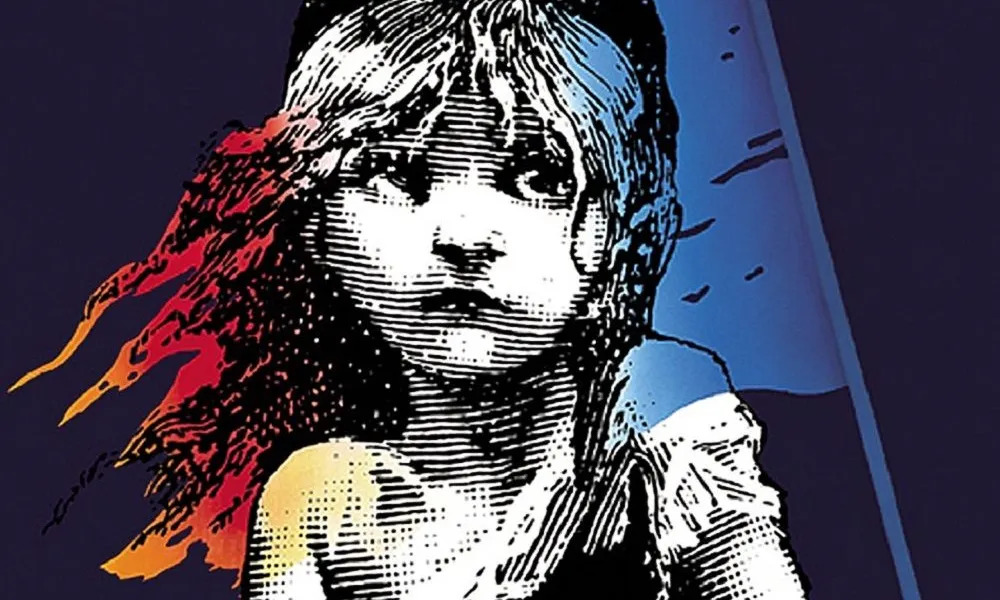

El principito

La vuelta al Mundo en ochenta dias

La lectura es una de mis actividades favoritas desde que era pequeño, considero que nos permite vivir experiencias y viajar a lugares que normalmente no podriamos acceder. En esta webpage, hablare sobre tres libros que son mis favoritos, los cuales se han quedado conmigo tanto por sus narrativas, mensajes y personajes.
Hay más tesoros en los libros que en todo el botín del pirata de “La isla del tesoro”
Walt Disney